Day 2: Tidy data and regression models
George Savva
March 2022
The dataset to support today’s work is here: walkingspeed.xlsx:
1 Day 2 Introduction
On day 1 we saw the basics of how R works, and introduced some basic tests and descriptive statistics.
In this session we will get more practical, dealing with real datasets, estimating and reporting linear models.
Specific learning objectives are
- Tidy data
- Data wrangling
- Estimating and diagnosing a linear model
2 Stroke rehabilitation study
In this tutorial we will use linear models in R to answer some research questions arising from a clinical study.
The data are from a randomised clinical trial of a new rehabilition intervention (compared to standard post-stroke care) aimed at improving the walking speed of hospital patients. Better walking speed is a good indicator of general stroke recovery.
We have recorded:
- the age and sex of each participant,
- the treatment allocation,
- the hospital department from which they were recruited and
- time they take to complete a walking task.
Our research questions are:
- What are the mean and standard deviation of walking speed for treated and untreated participants?
- Does the treatment improve walking speed compared to controls?
- By how much, and how certain are we of this?
- Do age and sex affect walking speed?
- Does sex affect the success of the treatment?
- Was there any difference in treatment effect by department?
2.1 Installing the packages we will need
Today we will use the readxl, dplyr, gtsummary, and emmeans packages. Make sure you have these installed.
install.packages("readxl")
install.packages("dplyr")
install.packages("emmeans")
install.packages("gtsummary")2.2 Loading and exploring the data
First we should inspect the data that we have. It has been supplied to us as an Excel sheet walkingspeed.xlsx. There are three sheets that include the data that we need for our analysis. treated includes outcomes from treated participants, control includes the outcome from control participants, while meta includes the demographic meta data from all participants.
We will need to organise this data into a form in which it can be analysed (ie a ‘tidy’ format).
2.3 Exercise 1. Tidy data
- Discuss - How should the walking speed data look in a ‘tidy’ layout?
3 Making the data ‘tidy’ in R
In this simple case we might find it easier to create our dataset in the right format before we import it into R.
But for more complex or larger datasets, or if we might have to repeat this operation with a new dataset, it would be better to all of our ‘data wrangling’ using R code.
We have our data in three separate sheets, and we need to end up with a single data frame that allows us to answer our questions by expressing relationships using the formula syntax.
That is, we will ultimately want to be able to say something like:
speed ~ treatment + age + sex + department
so we need to set up our dataset to facilitate this.
We will need to append the treated to the control datasets, and then merge in the meta-data.
3.1 Step 1. Appending datasets
Base R has the function rbind() to combine dataframes row-wise into a new longer dataframe. But as with many ‘data wrangling’ problems, the tidyverse function bind_rows()is better. Note - for those who want to use the data.table package, the function rbindlist() is an excellent alternative.
Tidyverse is made of lots of different packages, we have already seen readxl in day 1, today we will use a function from the dplyr package.
3.2 Worked Example 1. Using bind_rows()
- Check whether you have
dplyralready installed, and install it if you do not. - Start a new script for todays exercise.
- Load the
dplyrlibrary, and look at the help forbind_rows()
Load the control and treatment data into R from the Excel sheet.
library(readxl)
treated <- read_excel(path="walkingspeed.xlsx", sheet="treated")
control <- read_excel(path="walkingspeed.xlsx", sheet="control")3.3 Exercise 2. Type trouble
- What are the names and classes of each of the vectors in the
treatedandcontroldata frames.
- Are they the same? If not, why not?
- Is this a problem? How should we fix it?
Now if we use bind_rows() on these datasets, we see the following:
library(dplyr)
combined <- bind_rows(treated, control)
head(combined)We have two different columns for time! This is because bind_rows tries to match the columns by name, and the time columns had different names in our dataset. So we need to fix the names in our data frames to be the same before we bind them:
We can get or set the column names of a data frame with the names() function.
So here we will use:
names(control) <- names(treated) # can you explain what this does?Now what happens if you try to bind the rows?
combined <- bind_rows(treated, control) # can you explain what this does?## Error in `bind_rows()`:
## ! Can't combine `..1$time` <character> and `..2$time` <double>.If you didn’t fix the type of the walking earlier, bind_rows() will fail because in one dataset time is a character vector, and in the other it is a numeric vector.
Since we are going to be doing a statistical analysis on this variable, we need it to be a numeric. Recall that we can convert a character to a numeric with as.numeric()
The same function will work for a vector that is part of a dataframe:
treated$time <- as.numeric(treated$time)## Warning: NAs introduced by coercionNote the warning here, R is telling us that there was a non-numeric character, and that it has been converted to missing. We should check the original data to see if this is acceptable to us.
Question - how might you find out using R code which observation is has a time that could not be converted to numeric?
Now we can bind the rows of the dataset together:
combined <- bind_rows(treated, control)
head(combined)This is fine, but now we don’t know which data point came from which group. Fortunately, bind_rows() has another argument that adds a column to the new dataset indicating which row it came from.
3.4 Exercise 3. Adding an group column
- Check the help for
bind_rows()to find out how to add the grouping column. - Try it! Call the new column
group.
4 Merging datasets
So now we have a combined dataset including all of our outcome data and a grouping variable.
To complete our data wrangling we need the patient meta-data to also be included in this data frame. Since the data are linked by an ID variable, we will use the merge() function to add this information:
First, we’ll read the meta-data into a new data frame.
Then we’ll merge the two together using the merge() function. by.x and by.y tell merge() which variables are the ID variables in the first and second datasets respectively. I hope this is clear, check the documentation if it is not!
meta <- read_excel(path="walkingspeed.xlsx", sheet="meta")
head(meta)head(combined)walkingdat <- merge(combined, meta, by.x = "patid", by.y = "patient")
head(walkingdat)So now we have a single dataframe in tidy format with everything we need to conduct our analysis!
Note that each row contains everything we need to know about each unit of observation, and each column corresponds to a specific variable.
This kind of data wrangling is fairly typical of the process I need to go through when I get a new dataset before I can start working on it.
Be prepared to spend some time figuring out how to do this with your data, and learning the relevant functions from the dplry, tidyr and other tidyverse or data.table libraries.
Also, when you are designing your data collection process be aware of how your data ultimately needs to be used, and design your spreadsheets or other data entry systems accordingly. If you use a database rather than a spreadsheet this will help.
5 Exploratory analysis
If you didn’t manage to create a walkingdat dataset in the section above, you can load a ready-made copy from the Excel sheet:
walkingdat <- readxl::read_excel("walkingspeed.xlsx", sheet="fixed")Now we have our data in R, the first thing we should do is an exploratory analysis. The aims here are to:
- Check that the data all looks OK
- Think about how our statistical analysis might work.
The main tools we have for exploratory analysis are graphs and descriptive statistics. We should also consider the pattern of missing data to see if this tells us anything important.
For my exploratory plots I’ll use base R graphics. Later when we are making our report graphics we’ll use ggplot.
For a first plot, seeing all the data points is important:
plot(time~age, data=walkingdat)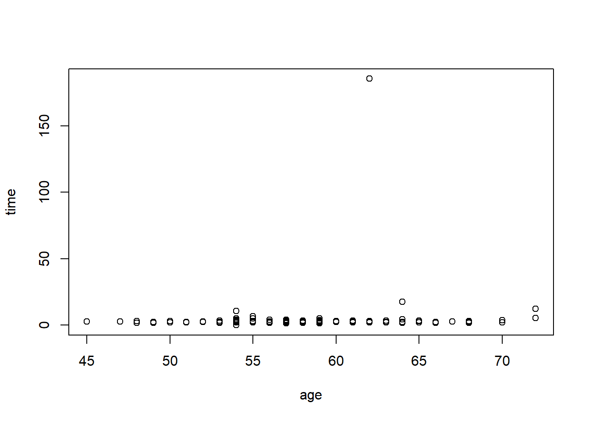
boxplot(time~sex, data=walkingdat)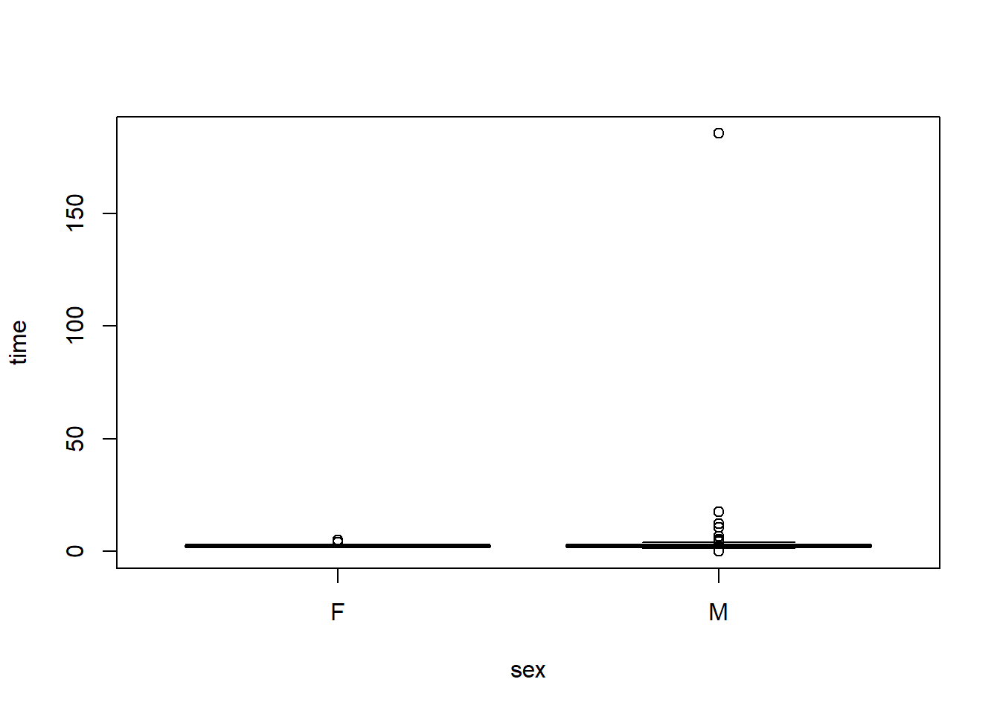
What do we learn from these plots?
Does the big outlier look reasonable (given what we know about the experiment?)
What are our options for dealing with it?
6 Outliers and transformations
A transformation is often a good option for dealing with outliers or non-normal distributions.
plot(time~age, log="y",data=walkingdat)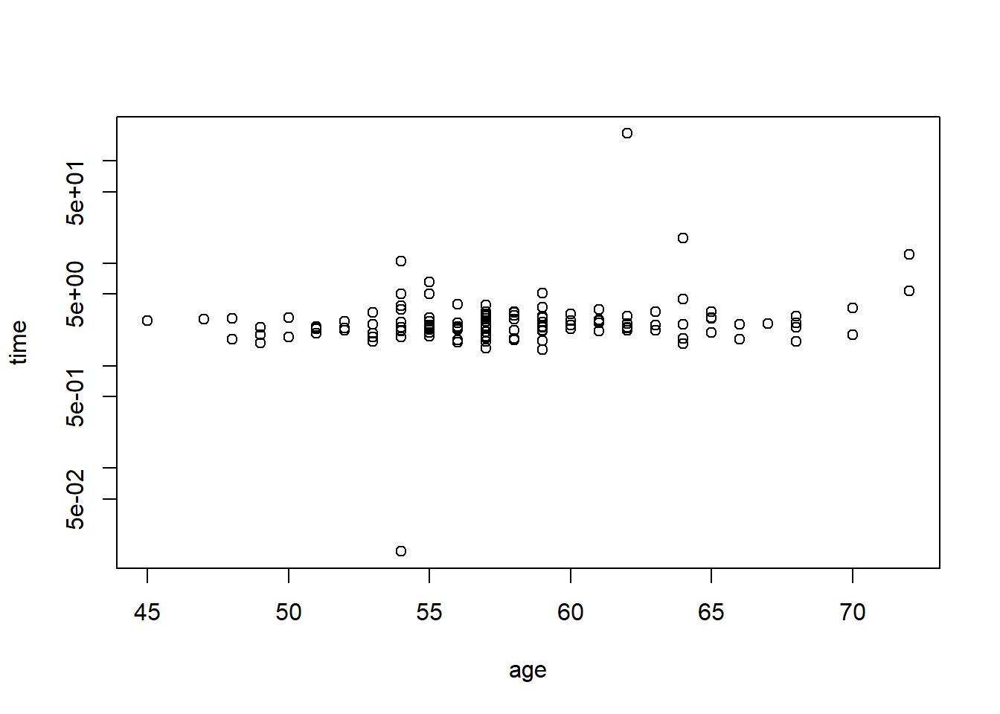
Now we can see an unreasonably high value, and an unreasonably low one! We also see that the data is likely to be normally distributed (or close enough) on a logarithmic scale.
Let’s get rid of the outliers, as we believe they are unreasonable. It’s a judgement call but I think I would only remove the highest and the lowest value here, the others look OK.
To remove the outliers, I will set the value to NA if they are higher or lower than a certain threshold.
walkingdat$time[walkingdat$time>100] <- NA
walkingdat$time[walkingdat$time<.1] <- NA
plot(time~age, log="y",data=walkingdat)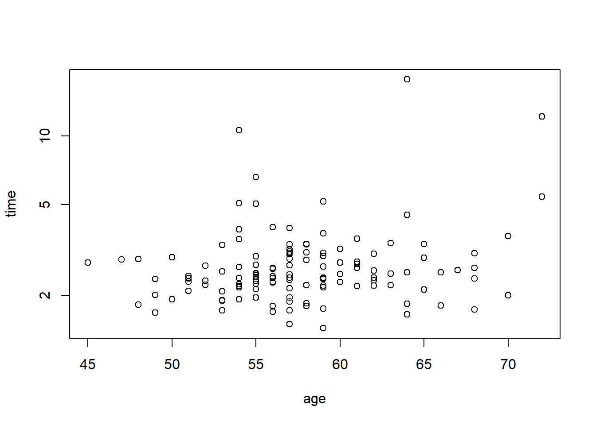
boxplot(time~group, data=walkingdat, log="y")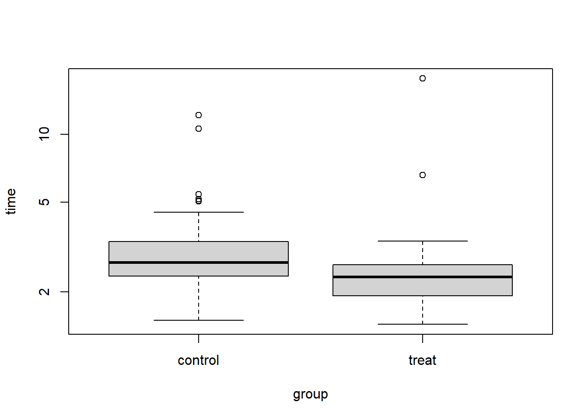
That looks much better.
7 Descriptive statistics
Our first question concerned descriptive statistics around walking time amongst men and women.
We saw in the last session that R does not have a good built in way to make nice descriptive tables. In the last session we saw the table1 package but now we can use the new tbl_summary() function from the gtsummary package to get these.
library(gtsummary)
walkingdat <- walkingdat
tbl_summary(walkingdat)| Characteristic | N = 1361 |
|---|---|
| patid | 68 (35, 102) |
| group | |
| control | 69 (51%) |
| treat | 67 (49%) |
| time | 2.43 (2.17, 2.94) |
| Unknown | 3 |
| sex | |
| F | 36 (26%) |
| M | 100 (74%) |
| age | 57.0 (54.0, 60.2) |
| department | |
| 1 | 29 (21%) |
| 2 | 31 (23%) |
| 3 | 42 (31%) |
| 4 | 34 (25%) |
| 1 Median (IQR); n (%) | |
This is really nice!. Something to note: tbl_summary has detected that ‘department’ has only four values so has treated it as a categorical variable. This is fine but in general R functions will not do this (as we will see later) so be careful.
We want our data stratified by treatment group, so we can use:
tbl_summary(walkingdat, by=group)| Characteristic | control, N = 691 | treat, N = 671 |
|---|---|---|
| patid | 70 (36, 104) | 67 (34, 100) |
| time | 2.69 (2.34, 3.34) | 2.32 (1.94, 2.63) |
| Unknown | 2 | 1 |
| sex | ||
| F | 19 (28%) | 17 (25%) |
| M | 50 (72%) | 50 (75%) |
| age | 57.0 (54.0, 59.0) | 57.0 (54.0, 61.5) |
| department | ||
| 1 | 16 (23%) | 13 (19%) |
| 2 | 16 (23%) | 15 (22%) |
| 3 | 17 (25%) | 25 (37%) |
| 4 | 20 (29%) | 14 (21%) |
| 1 Median (IQR); n (%) | ||
We won’t spend a lot of time on this table, but lets change the statistics displayed, and some of the row names, and drop the rows we don’t want to include.
For more customisations see the tbl_summary vignette.
Take some time to study the tbl_summary command below, the tbl_summary help files and vignettes to understand how these are specified:
tbl1 <- tbl_summary(walkingdat[,c("group","time","age", "sex")],
by=group,
label=list(time ~ "Time (s)", age ~ "Age (yrs)", sex~"Sex"),
statistic=list(time~"{mean} ({sd})"))
add_overall(tbl1)| Characteristic | Overall, N = 1361 | control, N = 691 | treat, N = 671 |
|---|---|---|---|
| Time (s) | 2.86 (1.86) | 3.12 (1.68) | 2.61 (2.00) |
| Unknown | 3 | 2 | 1 |
| Age (yrs) | 57.0 (54.0, 60.2) | 57.0 (54.0, 59.0) | 57.0 (54.0, 61.5) |
| Sex | |||
| F | 36 (26%) | 19 (28%) | 17 (25%) |
| M | 100 (74%) | 50 (72%) | 50 (75%) |
| 1 Mean (SD); Median (IQR); n (%) | |||
8 Regression modelling
Now we have our data we can start to address our scientific objectives. Our first ‘inferential’ problem was to test whether there was any effect of treatment on walking speed.
8.1 Exercise 4. T-test
- Use a t-test to establish whether there was an effect of treatment on walking speed.
- Compare the t-test with and without equal variances.
8.2 Worked Example 2. lm()
Now I will introduce the lm() function for linear models. lm() is for linear regression, but it is very important to understand this whatever kind of analysis you are planning, because this function provides the template for doing any kind of statistical modelling in R. T-tests and ANOVA can also be conducted through this linear modelling framework.
First lets show that the lm() command can produce an identical output to t.test()
Make sure you understand the commands below:
model1 <- lm( time ~ group, data=walkingdat)
summary(model1)##
## Call:
## lm(formula = time ~ group, data = walkingdat)
##
## Residuals:
## Min 1Q Median 3Q Max
## -1.6223 -0.7297 -0.3963 0.0604 15.0317
##
## Coefficients:
## Estimate Std. Error t value Pr(>|t|)
## (Intercept) 3.1162 0.2257 13.806 <2e-16 ***
## grouptreat -0.5065 0.3204 -1.581 0.116
## ---
## Signif. codes: 0 '***' 0.001 '**' 0.01 '*' 0.05 '.' 0.1 ' ' 1
##
## Residual standard error: 1.848 on 131 degrees of freedom
## (3 observations deleted due to missingness)
## Multiple R-squared: 0.01872, Adjusted R-squared: 0.01123
## F-statistic: 2.499 on 1 and 131 DF, p-value: 0.1163How do you interpret this model output? Is there an effect of group on walking speed?
t.test( time ~ group,data=walkingdat, var.equal=TRUE)##
## Two Sample t-test
##
## data: time by group
## t = 1.5808, df = 131, p-value = 0.1163
## alternative hypothesis: true difference in means between group control and group treat is not equal to 0
## 95 percent confidence interval:
## -0.1273411 1.1403582
## sample estimates:
## mean in group control mean in group treat
## 3.116183 2.609674So if these outcomes are the same you might wonder why we prefer the linear model function? We should prefer the linear regression because it offers us a lot more flexibility later on.
8.3 Worked Example 3. Regression diagnostics
We should always check that the assumption underlying a linear model are met. The assumptions are:
- The residuals (differences between observations and ‘predicted’ values) are identically normally distributed
- The observations are independent of each other
There is no statistical test for these assumptions, we need to use graphical methods to judge visually whether the first is likely to be reasonable, and our knowledge of the experimental design to know whether the second is true.
When you ‘plot’ a linear model object the plot() function makes graphs to help you check the distribution of residuals from the model:
plot(model1)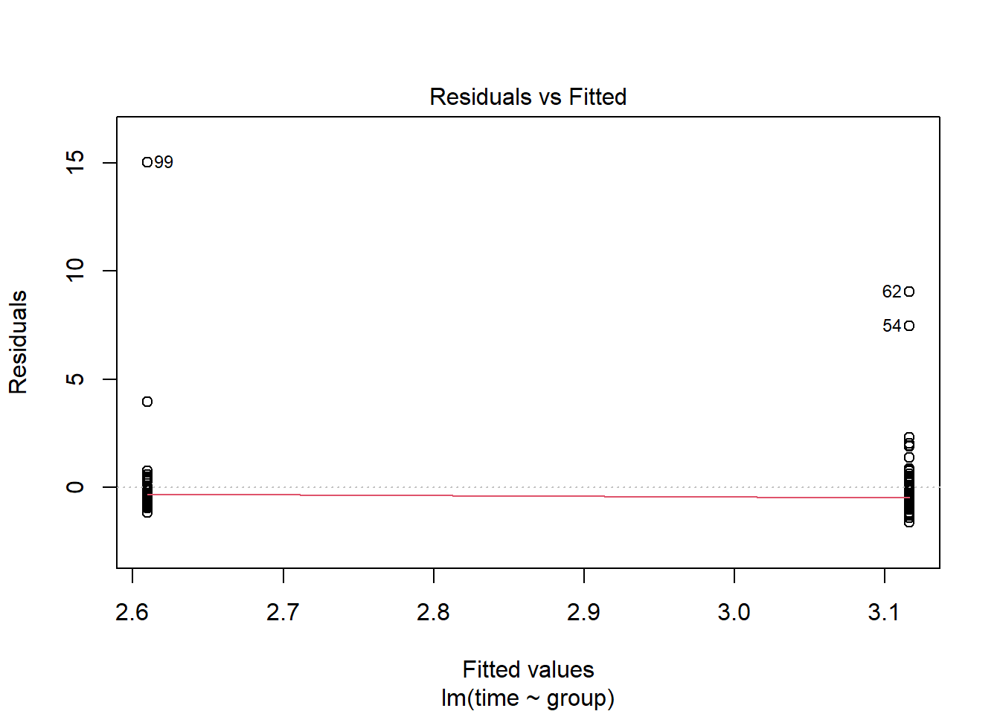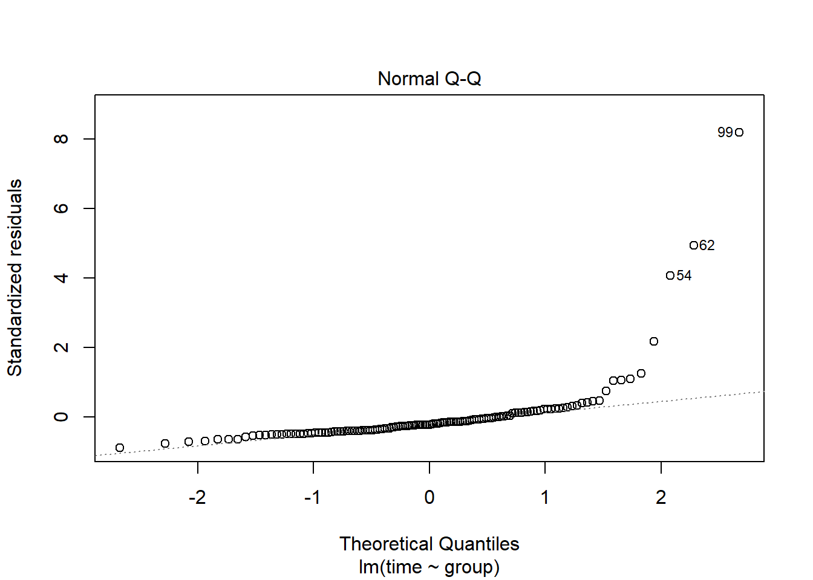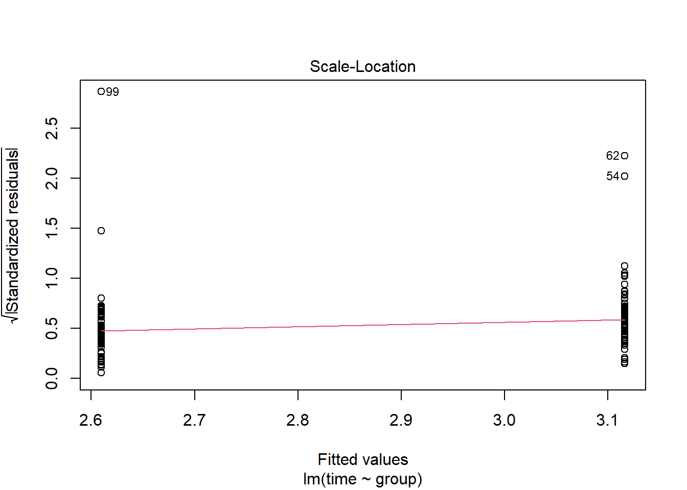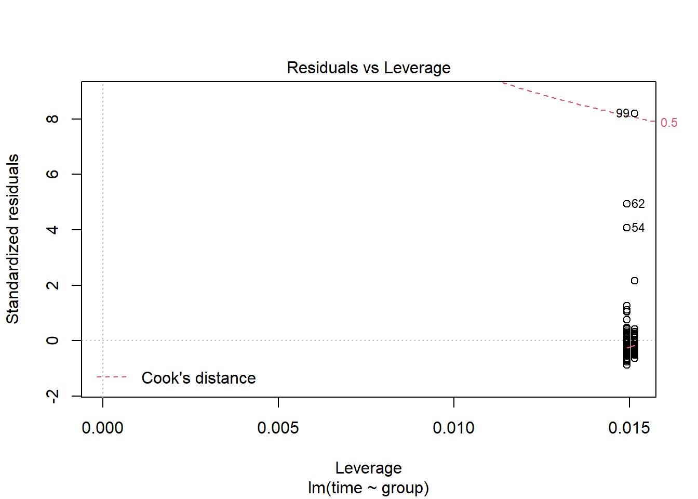
The second graph shows a normal qqplot of residuals from the model. If the times were normally distributed aroud their predicted values this would follow the straight dotted line. As it is we can see a significant deviation; there are a lot of residuals that are a lot bigger than the model thinks they should be.
The first and third graphs are less useful for this regression (because there are only two possible ‘predicted’ values) but they still illustrate that although the residuals are not normally distributed they do at least seem to be similarly distriuted across groups.
8.4 Transformations and linear models
In the last section we considered a logarithmic transformation for our descriptive plots. It looked like the data was more ‘normally’ distributed under this transformation.
We could try to model log(time) as a function of treatment, to see if this meet the assumptions of the regression model better.
We could create a new variable with the transformed values, or we can add the transformation directly to our model. First we’ll look at the log-transformation:
model2 <- lm( log(time) ~ group , data=walkingdat )
summary(model2)##
## Call:
## lm(formula = log(time) ~ group, data = walkingdat)
##
## Residuals:
## Min 1Q Median 3Q Max
## -0.65480 -0.21443 -0.05689 0.11010 2.00270
##
## Coefficients:
## Estimate Std. Error t value Pr(>|t|)
## (Intercept) 1.05620 0.04277 24.694 < 2e-16 ***
## grouptreat -0.18865 0.06072 -3.107 0.00232 **
## ---
## Signif. codes: 0 '***' 0.001 '**' 0.01 '*' 0.05 '.' 0.1 ' ' 1
##
## Residual standard error: 0.3501 on 131 degrees of freedom
## (3 observations deleted due to missingness)
## Multiple R-squared: 0.06864, Adjusted R-squared: 0.06153
## F-statistic: 9.654 on 1 and 131 DF, p-value: 0.002317plot(model2)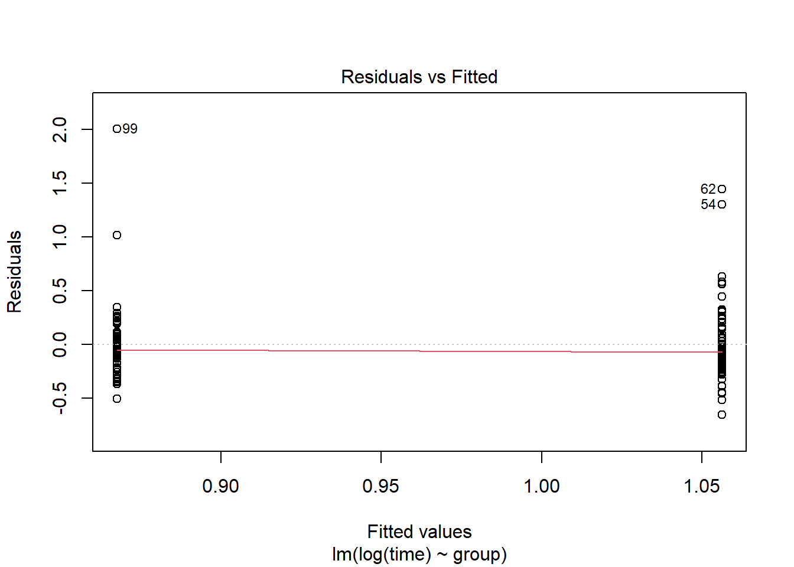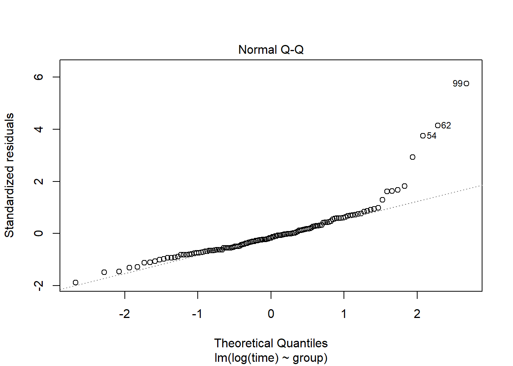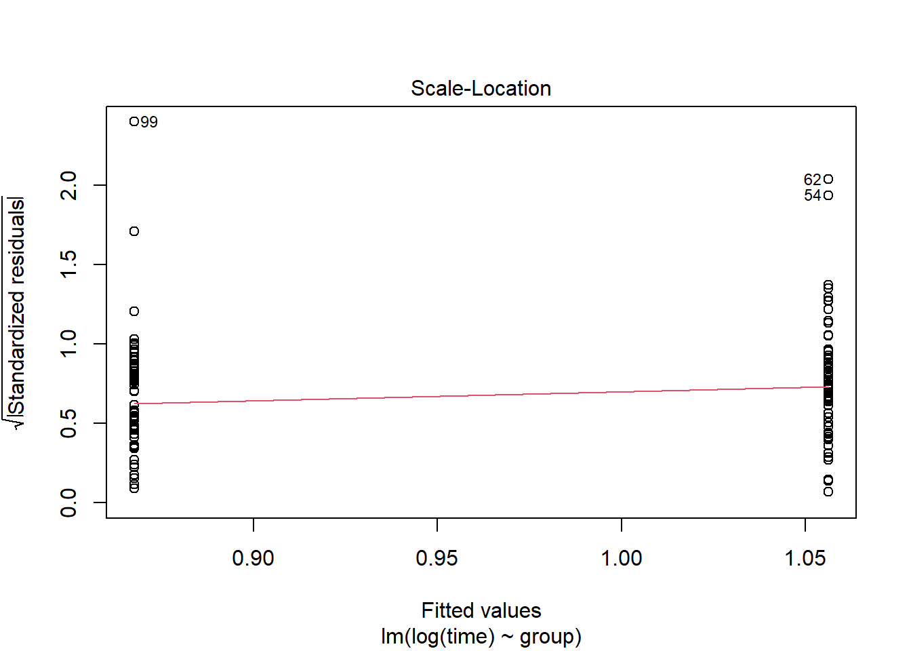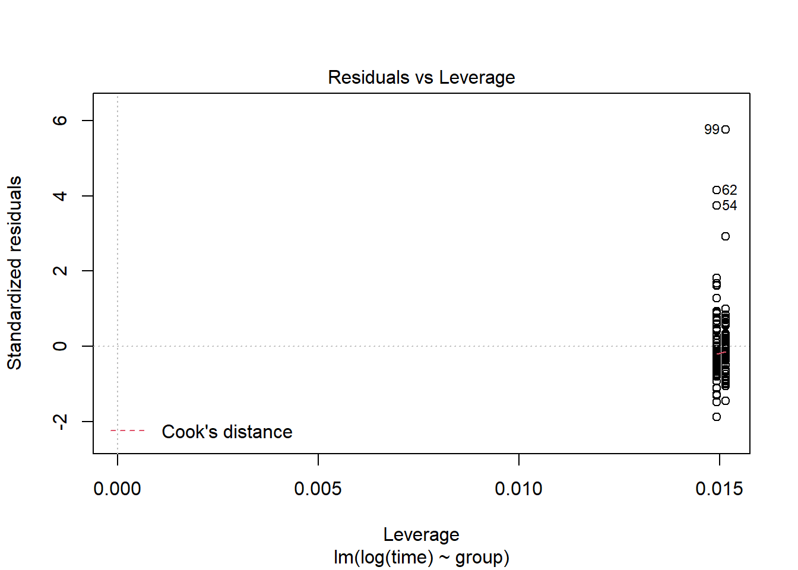
Notice how the transformation was entered into the formula. Rather than just sending log transformed values to the regression, the formula understands that log(time) is a logarithmic transformation of our intended outcome variable. This is useful later, for example if we want marginal means from our model (via the emmeans package) because the means will be inverted back to the original scale.
There is no reason we need to use a log-transform. Remember we are dealing with a ‘time’ variable, but what we might equally be interested in is ‘speed’ which is the reciprocal of this. So we could run:
model3 <- lm( 1/time ~ group, data=walkingdat)
summary(model3)##
## Call:
## lm(formula = 1/time ~ group, data = walkingdat)
##
## Residuals:
## Min 1Q Median 3Q Max
## -0.38121 -0.06170 0.00132 0.06453 0.30257
##
## Coefficients:
## Estimate Std. Error t value Pr(>|t|)
## (Intercept) 0.36681 0.01287 28.500 < 2e-16 ***
## grouptreat 0.07108 0.01827 3.891 0.000158 ***
## ---
## Signif. codes: 0 '***' 0.001 '**' 0.01 '*' 0.05 '.' 0.1 ' ' 1
##
## Residual standard error: 0.1053 on 131 degrees of freedom
## (3 observations deleted due to missingness)
## Multiple R-squared: 0.1036, Adjusted R-squared: 0.09674
## F-statistic: 15.14 on 1 and 131 DF, p-value: 0.0001583plot(model3)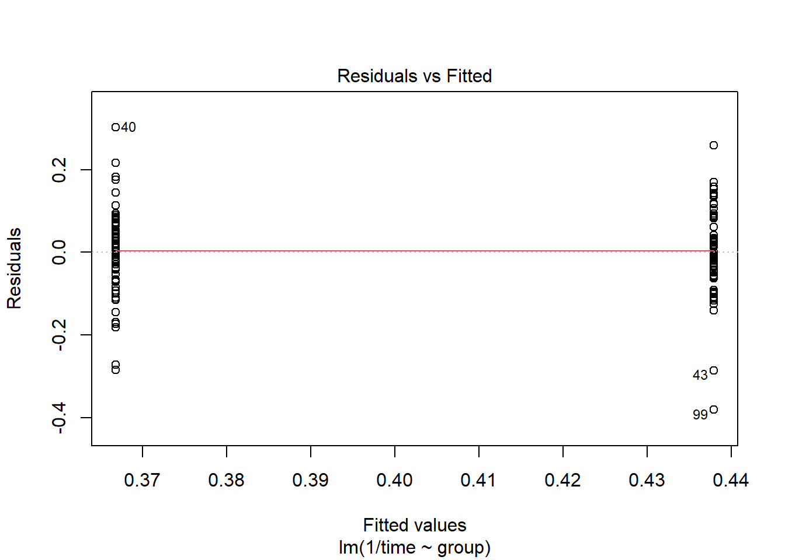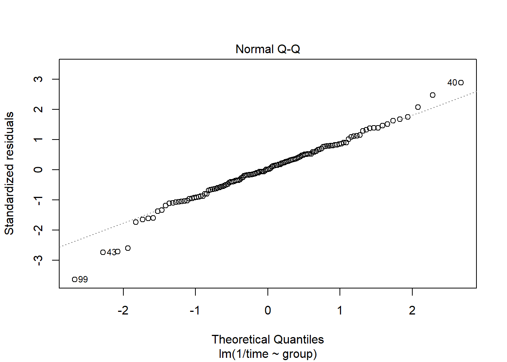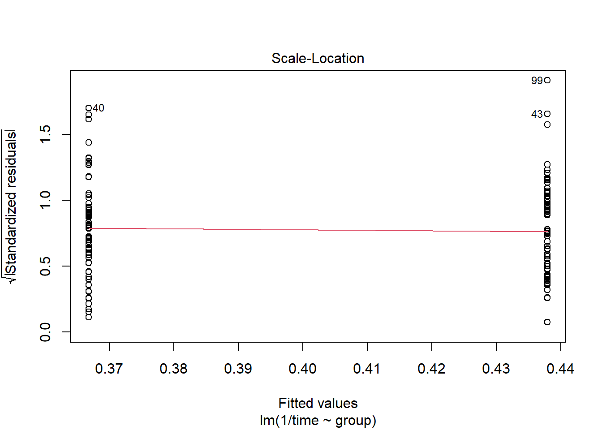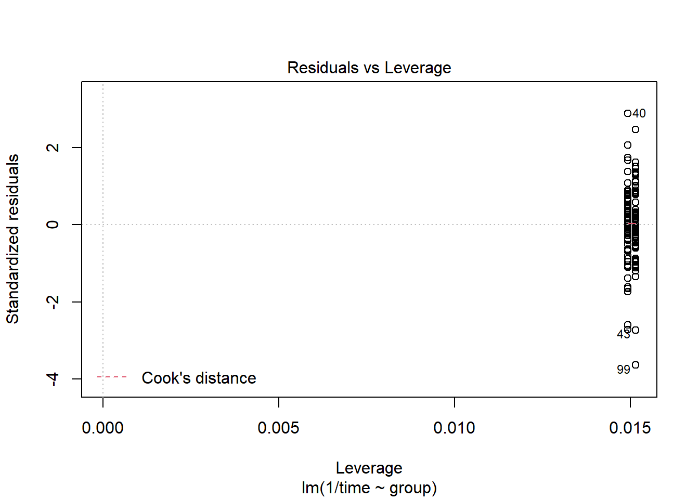
The final model looks the best. It seems that if we model the inverse of time (speed) instead of time itself then the distribution of the residuals is very close to normal.
How should we interpret the final model?
8.5 Presenting the results
An advantage of regression models is that we get an estimate and confidence interval for our effect as well as a p-value. This is a major disadvantge of analysis or reporting just by placing p-values on plots; by restricting ourselves to this we never get to discuss how much of a difference the treatment makes, and our certainty around that estimate of effect.
The plain text summary of the model gives us all of the information we need, but there are other packages to organise regression model output in a more comprehensible and publication-ready form.
For example:
tbl_regression(model1, intercept = TRUE, )| Characteristic | Beta | 95% CI1 | p-value |
|---|---|---|---|
| (Intercept) | 3.1 | 2.7, 3.6 | <0.001 |
| group | |||
| control | — | — | |
| treat | -0.51 | -1.1, 0.13 | 0.12 |
| 1 CI = Confidence Interval | |||
9 Multivariable models
We can add the effect of age into our model, simply by changing the model formula in the lm() call:
model4 <- lm( 1/time ~ group + age, data=walkingdat)
tbl_regression(model4)| Characteristic | Beta | 95% CI1 | p-value |
|---|---|---|---|
| group | |||
| control | — | — | |
| treat | 0.07 | 0.04, 0.11 | <0.001 |
| age | 0.00 | -0.01, 0.00 | 0.014 |
| 1 CI = Confidence Interval | |||
It looks like the effect of age is 0! But it is statistically significant, so the low effect size this is probably just a rounding error. We’ll have to change the level of precision being reported in the tabular output (and tweak another couple of options):
tbl_regression(model4,
show_single_row="group",
intercept=TRUE,
estimate_fun = function(x) style_ratio(x, digits = 4))| Characteristic | Beta | 95% CI1 | p-value |
|---|---|---|---|
| (Intercept) | 0.6108 | 0.4157, 0.8058 | <0.001 |
| group | 0.0732 | 0.0377, 0.1087 | <0.001 |
| age | -0.0043 | -0.0076, -0.0009 | 0.014 |
| 1 CI = Confidence Interval | |||
We should continue to check that the model assumptions are still met.
9.1 Exercise 5. Multivariable models
- Add a term to the model to check whether walking speed differs between men and women.
- How do you interpret the result?
plot(model4) 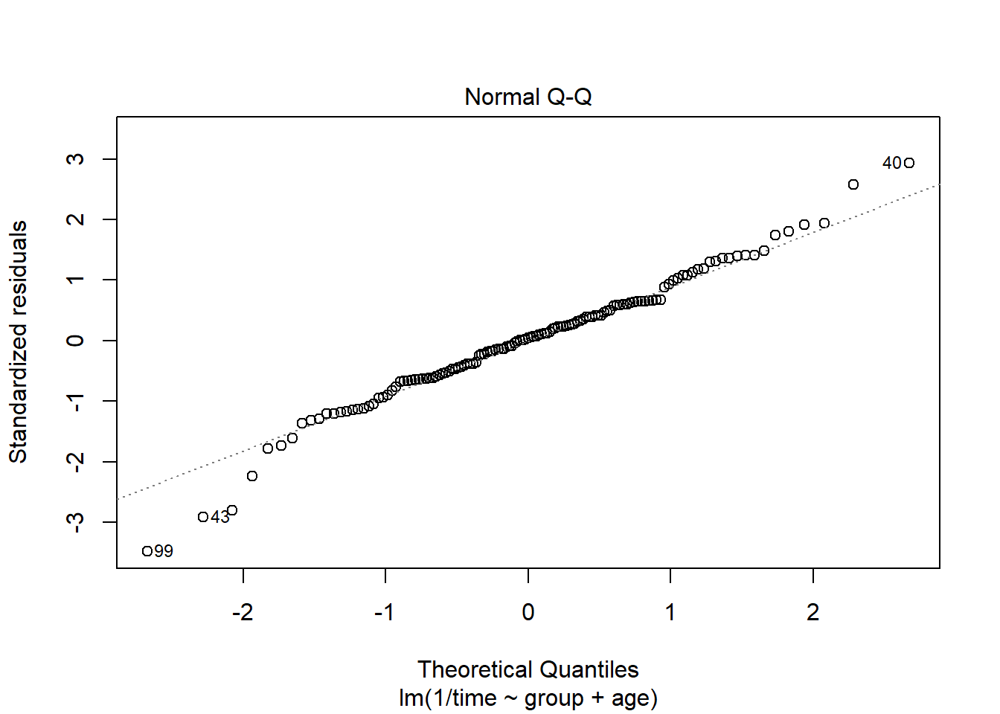
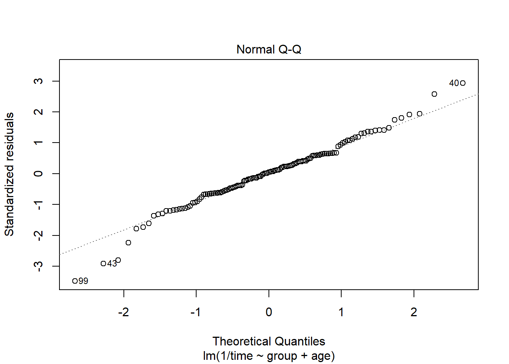 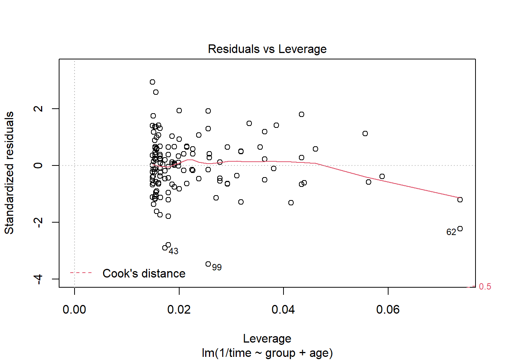
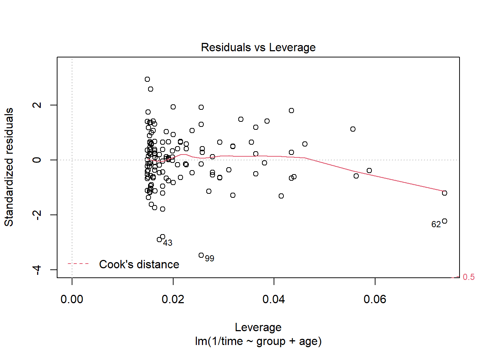
10 Extractor functions
Lets go back to the model objects that we are creating. What is the class of model1?
class(model1)## [1] "lm"So our model results are stored in an object of class lm (or linear model). How can we see what information this contains? We have already seen the summary() and plot() functions act when an lm object is passed to them. summary() gives us a model summary, and plot() shows us the regression diagnostics.
We can see directly what kind of information the model object holds using the names() function. Remember when we applied names() to a data frame it gave us the column names? When we apply names() to a model it will give us the list of elements it contains:
names(model1)## [1] "coefficients" "residuals" "effects" "rank"
## [5] "fitted.values" "assign" "qr" "df.residual"
## [9] "na.action" "contrasts" "xlevels" "call"
## [13] "terms" "model"We could, for example, access the model coefficients using:
model1$coefficients## (Intercept) grouptreat
## 3.1161826 -0.5065085in exactly the same way we would access a column in a data frame.
But it is usually better to use an ‘extractor’ function, that is a function that has been designed to get the information in a more friendly and helpful way than to access this information directly. For example, if we wanted the model coefficients we should really use:
coef(model1)## (Intercept) grouptreat
## 3.1161826 -0.5065085To see what other functions can be used to extract information from this object (or any object), we can use the methods() function as follows:
methods(class="lm")## [1] add1 alias anova case.names coerce
## [6] confint cooks.distance deviance dfbeta dfbetas
## [11] drop1 dummy.coef effects extractAIC family
## [16] formula hatvalues influence initialize kappa
## [21] labels logLik model.frame model.matrix nobs
## [26] plot predict print proj qr
## [31] residuals rstandard rstudent show simulate
## [36] slotsFromS3 summary variable.names vcov
## see '?methods' for accessing help and source codeFrom here we can see that there is an anova() function that would give us the analysis of variance corresponding to this model, and functions to give us predictions and residuals from the model. We’ll look at anova() later when we deal with categorical predictors.
10.1 Exercise 6. Extracting confidence intervals
- How you get confidence intervals for model coefficients.
- Can you get the 95% confidence interval for the effect of treatment on
1/time. - Can you get the 90% confidence interval instead?
11 Testing interactions
Our existing model does not allow the effect of treatment on walking speed to vary with sex. But we might be interested in whether the effect of group is the same in men or women (a so called ‘interaction’ effect).
Note it is not valid to do this by comparing models estimated in men and women separately. We must instead estimate a model that includes the interaction between sex and treatment on walking speed.
Interactions are indicated in R formulas by a * or a : between the terms. When we use : we add the interaction alone, when we use * we add the interaction and the main effects of both variables. So to add the interaction between sex and treatment, as well as the main effects of group and sex we would use:
model6 <- lm(1/time ~ age + sex*group, data = walkingdat)
summary(model6)##
## Call:
## lm(formula = 1/time ~ age + sex * group, data = walkingdat)
##
## Residuals:
## Min 1Q Median 3Q Max
## -0.35632 -0.06260 0.00784 0.05952 0.30551
##
## Coefficients:
## Estimate Std. Error t value Pr(>|t|)
## (Intercept) 0.605697 0.103422 5.857 3.75e-08 ***
## age -0.003984 0.001865 -2.136 0.0346 *
## sexM -0.014755 0.029523 -0.500 0.6181
## grouptreat 0.063261 0.034738 1.821 0.0709 .
## sexM:grouptreat 0.013762 0.040646 0.339 0.7355
## ---
## Signif. codes: 0 '***' 0.001 '**' 0.01 '*' 0.05 '.' 0.1 ' ' 1
##
## Residual standard error: 0.104 on 128 degrees of freedom
## (3 observations deleted due to missingness)
## Multiple R-squared: 0.1462, Adjusted R-squared: 0.1195
## F-statistic: 5.48 on 4 and 128 DF, p-value: 0.0004187Finally, we can test whether model6 fits the data better than model5. Anova can be used to compare the fit of two models, and give a p-value for whether the more complex model provides a significantly better fit than the simpler one.
anova(model4, model6)Is there any evidence that the effect of treatment varies by sex?
12 Categorical predictors in regression models
We might be interested in whether walking speed varies by department. We could add the department variable to our regression model as follows:
model7 <- lm( 1/time ~ age + sex + group + department, data=walkingdat)
summary(model7)##
## Call:
## lm(formula = 1/time ~ age + sex + group + department, data = walkingdat)
##
## Residuals:
## Min 1Q Median 3Q Max
## -0.34432 -0.04907 0.00962 0.04817 0.29748
##
## Coefficients:
## Estimate Std. Error t value Pr(>|t|)
## (Intercept) 0.567301 0.102797 5.519 1.82e-07 ***
## age -0.004070 0.001841 -2.211 0.0288 *
## sexM -0.010466 0.021794 -0.480 0.6319
## grouptreat 0.073275 0.017821 4.112 6.97e-05 ***
## department 0.015680 0.008278 1.894 0.0605 .
## ---
## Signif. codes: 0 '***' 0.001 '**' 0.01 '*' 0.05 '.' 0.1 ' ' 1
##
## Residual standard error: 0.1026 on 128 degrees of freedom
## (3 observations deleted due to missingness)
## Multiple R-squared: 0.1687, Adjusted R-squared: 0.1428
## F-statistic: 6.496 on 4 and 128 DF, p-value: 8.613e-05But notice that R has not recognised that the ‘department’ variable should be treated as a categorical variable. To make sure that ‘department’ is treated as categorical we should convert it to a ‘factor’ in our data frame:
walkingdat$department_category <- factor(walkingdat$department)Note that in the summary of our dataframe, ‘department_factor’ is now treated appropriately. Lets see how the regression output changes:
model7 <- lm( 1/time ~ age + sex + group + department_category, data=walkingdat)
summary(model7)##
## Call:
## lm(formula = 1/time ~ age + sex + group + department_category,
## data = walkingdat)
##
## Residuals:
## Min 1Q Median 3Q Max
## -0.32209 -0.05030 -0.00242 0.05689 0.29735
##
## Coefficients:
## Estimate Std. Error t value Pr(>|t|)
## (Intercept) 0.594121 0.101966 5.827 4.45e-08 ***
## age -0.004159 0.001868 -2.227 0.027756 *
## sexM -0.007225 0.021971 -0.329 0.742840
## grouptreat 0.070103 0.017997 3.895 0.000158 ***
## department_category2 -0.012044 0.026657 -0.452 0.652186
## department_category3 0.042114 0.025295 1.665 0.098418 .
## department_category4 0.031932 0.026365 1.211 0.228110
## ---
## Signif. codes: 0 '***' 0.001 '**' 0.01 '*' 0.05 '.' 0.1 ' ' 1
##
## Residual standard error: 0.1023 on 126 degrees of freedom
## (3 observations deleted due to missingness)
## Multiple R-squared: 0.1867, Adjusted R-squared: 0.148
## F-statistic: 4.822 on 6 and 126 DF, p-value: 0.0001837R has given us an estimate of the effect of each department, compared to department 1, with a p-value corresponding to whether each of departments 2,3, or 4 differ from department 1. It is probably a better question to ask whether the addition of ‘department’ led to a better model, that is, ask for an omnibus test of effect of ‘department’.
anova(model4, model7)We could also use anova() to get the analysis of variance for the whole model:
anova(model7)Finally, we might genuinely be interested in comparisons between each pair of levels. The best way to get this is via the emmeans package as follows:
library(emmeans)## Warning: package 'emmeans' was built under R version 4.1.3emmeans(model7, pairwise~department_category) ## $emmeans
## department_category emmean SE df lower.CL upper.CL
## 1 0.386 0.0198 126 0.347 0.425
## 2 0.374 0.0190 126 0.336 0.412
## 3 0.428 0.0165 126 0.396 0.461
## 4 0.418 0.0196 126 0.379 0.457
##
## Results are averaged over the levels of: sex, group
## Confidence level used: 0.95
##
## $contrasts
## contrast estimate SE df t.ratio p.value
## 1 - 2 0.0120 0.0267 126 0.452 0.9692
## 1 - 3 -0.0421 0.0253 126 -1.665 0.3466
## 1 - 4 -0.0319 0.0264 126 -1.211 0.6210
## 2 - 3 -0.0542 0.0245 126 -2.211 0.1259
## 2 - 4 -0.0440 0.0260 126 -1.690 0.3332
## 3 - 4 0.0102 0.0248 126 0.410 0.9766
##
## Results are averaged over the levels of: sex, group
## P value adjustment: tukey method for comparing a family of 4 estimatesThe output from emmeans includes a ‘marginal’ estimate for the walking speed in each department, plus an estimate and statistical test for each department compared to every other, with a suitable p-value correction for multiple testing.
12.1 Exercise 7. Interactions
- Can you use
lm()andanova()to test whether the effect of treatment on walking speed varies with department?
13 Extensions to other types of models
Almost every experiment you do can be analysed with this paradigm, that is an outcome variable depending on one or more predictors. And so data from almost every experiment can be analysed and reported with lm() or a related function.
In practice the modelling functions I find useful for most analyses are:
lm()- regression models and ANOVAglm()- generalised linear models (count data and binary outcomes in including Poisson and logistic regression)lmer()andglmer()- from the lme4 package for mixed effects models (when the assumption of independence is not met, analogous to repeated measures ANOVA)nlme()for non-linear models- And many others..
13.1 Further reading on analysis with R
More detailed linear modelling tutorial. http://tutorials.iq.harvard.edu/R/Rstatistics/Rstatistics.html
Understanding the linear regression diagnostic plots: http://www.sthda.com/english/articles/39-regression-model-diagnostics/161-linear-regression-assumptions-and-diagnostics-in-r-essentials/
Using emmeans to get contrasts and margins https://aosmith.rbind.io/2019/03/25/getting-started-with-emmeans/